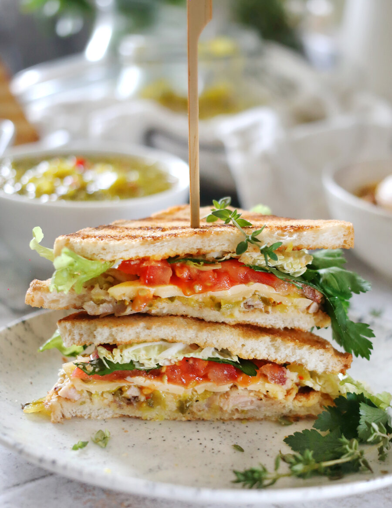

Благородный бутерброд с невероятным многообразием начинок, он будто создан для того, чтобы пустить в дело остатки запеченного мяса или птицы, которые непременно окажутся в вашем холодильнике после праздничного застолья.
Хлеб может быть тостовый, зерновой или гречневый, с легкой текстурой. Можно готовить с тем же успехом, используя разнообразные начинки и соусы, панини с чиабаттой, бургеры с булочками. Прежде чем выкладывать начинку, хлеб надо слегка подсушить на гриле, в тостере, духовке или на сковородке, но недолго, чтобы не пересушить.
Для начинки можно использовать ломтики запеченного мяса, ветчины, птицы, оставшиеся после основного блюда, или приготовить отдельно стейки, куриные грудки или филе бедер на гриле.
В сэндвич обязательно добавляют сочную составляющую: соус, салатную зелень, свежий помидор, карамелизованный лук или маринованные огурчики. Вяленые помидоры или вяленые сливы, запеченный сладкий перец — тоже отличные дополнения. Можно использовать и ломтики фруктов, например, классическое сочетание груши с горгонзолой. Или ягоды: бри с брусничным, вишневым или клюквенным вареньем.
Палитра соусов для сэндвичей весьма разнообразна: начиная с майонеза и кетчупа (конечно, лучше выбрать домашнего приготовления), до горчичного соуса, айоли, соусов ранч, маринара, «1000 островов».